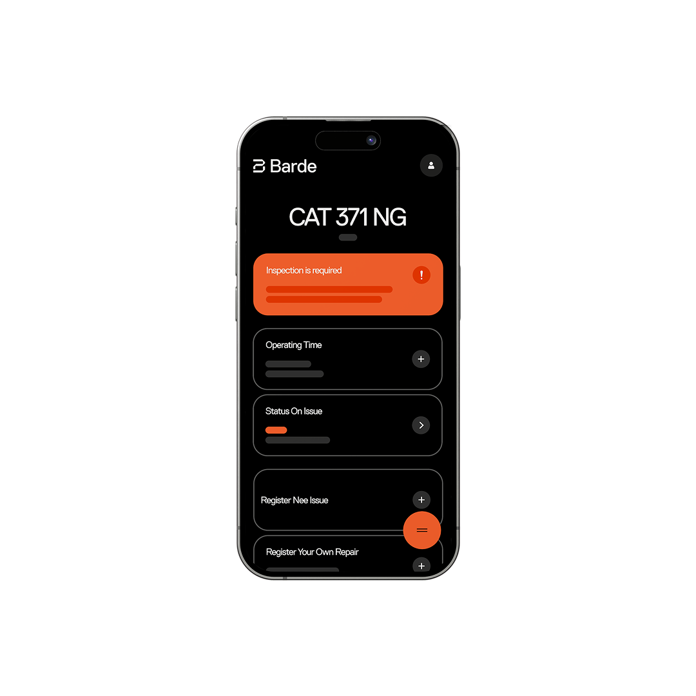

Forside / Verktøy
Verktøyene
Fem deler som kan brukes hver for seg, men som er sterkest sammen. Alt er laget for anleggsplassen — ikke for et kontor i en annen bransje.
01
Maskinvedlikehold
Full oversikt over arbeidsordre, feil og historikk. Hver maskin har sin egen logg, slik at service og reparasjoner ikke blir muntlig overlevering.
- Arbeidsordre med status, ansvarlig og frist
- Feil og avvik med bilde og kommentar
- Historikk som følger maskinen


02
Barde Felt
Registrer feil og dokumentasjon rett fra anleggsplassen. Den som står ved maskinen er den som vet hva som er galt — da skal ikke registreringen vente til etter arbeidsdagen.
- Registrering fra telefon eller nettbrett
- Bilder og kommentarer med i saken
- Oppdaterer arbeidsordren direkte
03–05
Prosjekt, timer og opplæring
De tre delene som gjør at tallene henger sammen med det som faktisk skjer ute.
Se verktøyene med deres egne maskiner
Vi tar en demo på 30 minutter der vi setter opp et typisk anlegg.